Capítulo 10 Supuestos
Fecha de la última revisión
## [1] "2026-10-01"Añadir los siguientes paquetes, Nota la función de pacman para instalar los paquetes. Esta función hace que si le falta un paquete en la lista lo va a instalar sin hacer tener que hacerlo uno por uno. Si quiere hacerlo separado remueve el # antes de install.packages
#----Instalar los paquetes-----
#install.packages("car", dependencies = TRUE)
#install.packages("ggplot2")
#install.packages("pastecs")
#install.packages("psych")
if (!require("pacman")) install.packages("pacman")
pacman::p_load(car, pastecs, psych, ggplot2, ggversa, knitr, GGally,
tidyverse, kableExtra, reshape2, ggcorrplot, gridExtra,
e1071, nortest)
# Activar los paquetes
library(GGally)
library(tidyverse)
library(kableExtra)
library(reshape2)
library(ggcorrplot)
library(gridExtra) # Un paquete para organizar las figuras de ggplot2
library(car) # Paquete para acompañar la regresión lineal
library(ggplot2) # Visualización de datos
library(pastecs) # Paquete para análisis estadístico
library(psych) # Paquete para análisis estadístico en psicología
library(ggversa) # un paquete con datos
library(e1071) # Paquete con las funciones de oblicuidad y curtosis
library(nortest) # Paquete con pruebas de normalidad adicionales
library(knitr)10.1 ¿Qué son supuestos?
Un supuesto es una condición que los datos tienen que cumplir para que el resultado de una prueba estadística signifique lo que decimos que significa. Si el supuesto no se cumple, la prueba sigue produciendo un número (un valor-p, un intervalo de confianza, una pendiente), pero ese número ya no corresponde a la pregunta biológica que se quiso contestar.
La ética en estadística se basa en comprobar y cumplir con los supuestos de las pruebas estadísticas que se usan. La gran mayoría de las pruebas tradicionales asumen que los datos cumplen con algunos supuestos; algunos típicos son:
- Datos recolectados al azar (independencia de las observaciones)
- Distribución normal
- Igualdad de varianza = Homogeneidad de Varianza
- Simetría de las distribuciones
Note que aquí la lista comienza con la independencia y no con la normalidad. La razón es práctica: la independencia depende del diseño del estudio y de cómo se recolectaron los datos, así que no se puede arreglar después de haber tomado las medidas. Los otros tres supuestos, por el contrario, sí tienen remedios (transformar los datos, cambiar de prueba) una vez los datos están en la hoja de cálculo.
Las pruebas paramétricas más comunes (prueba t, ANOVA, regresión) asumen: normalidad de los datos o de los residuales, homogeneidad de varianza entre grupos, e independencia de las observaciones. Si no se cumplen, conviene transformar los datos o usar pruebas no paramétricas.
Cuando no se cumplen los supuestos, aumentamos la probabilidad de cometer un error de tipo I (rechazar la hipótesis nula cuando en realidad es cierta) o un error de tipo II (no rechazar la hipótesis nula cuando en realidad es falsa).
Por consecuencia, es primordial que cada investigador evalúe los supuestos de las pruebas que usa y, si no se cumplen, busque métodos alternos. Por ejemplo, se pueden utilizar métodos no paramétricos, estadística bayesiana o robusta como alternativas.
10.1.1 ¿Qué supone cada prueba?
Los supuestos no son una lista suelta: cada prueba que se estudia en los capítulos siguientes exige un subconjunto específico de ellos. La tabla resume cuáles y dónde se discute cada prueba en este libro.
| Prueba | Capítulo | Independencia | Normalidad | Homogeneidad de varianza |
|---|---|---|---|---|
| Prueba de t de una muestra | 13 | Sí | de la variable | no aplica |
| Prueba de t pareada | 14 | Sí | de las diferencias | no aplica |
| Prueba de t independiente | 15 | Sí | dentro de cada grupo | Sí |
| ANOVA | 16 | Sí | de los residuales | Sí |
| Correlación de Pearson | 17 | Sí | de ambas variables | no aplica |
| Regresión lineal | 18 | Sí | de los residuales | Sí (homocedasticidad) |
| Regresión logística | 19 | Sí | no aplica | no aplica |
| Pruebas no paramétricas | 21 | Sí | no | según la prueba |
Observe dos cosas en la tabla. Primero, la independencia aparece en todas las filas; es el único supuesto que ninguna prueba perdona. Segundo, la columna de normalidad no siempre se refiere a lo mismo: en la prueba de t de una muestra se refiere a la variable medida, en la prueba pareada a las diferencias entre pares, y en el ANOVA y la regresión a los residuales del modelo y no a la variable de respuesta cruda.
Un error común es evaluar la normalidad de la variable de respuesta antes de ajustar un ANOVA o una regresión. En esos modelos el supuesto es sobre los residuales, o sea sobre lo que queda sin explicar después de restar el efecto de los grupos o de la variable predictiva. Una variable de respuesta que luce muy sesgada puede producir residuales perfectamente normales, y viceversa. Por eso, en un modelo, primero se ajusta y después se evalúa.
10.1.2 Cómo está organizado este capítulo
El capítulo sigue el orden en que uno debería evaluar los supuestos en un trabajo real:
- Independencia, que se evalúa pensando en el diseño del estudio y mirando el orden de los datos.
- Homogeneidad de varianza, primero entre grupos con gráficos de cajas condicionales y pruebas formales, y después dentro de un modelo de regresión usando los residuales.
- Valores atípicos e influyentes, que no son un supuesto en sí, pero que son la causa más frecuente de que los supuestos anteriores fallen. Aquí se usan los residuales estandarizados y la distancia de Cook.
- Normalidad, con gráficos Q-Q, histogramas con la curva teórica, curvas de densidad y pruebas formales.
- Simetría, medida con el índice de oblicuidad.
- Qué hacer cuando un supuesto no se cumple, que es la sección que conecta este capítulo con el resto del libro.
- Colinealidad, que es un supuesto adicional y exclusivo de los modelos con más de una variable predictiva.
Note que el énfasis de este capítulo es evaluar los supuestos con herramientas visuales. Las pruebas formales se presentan como complemento, nunca como sustituto, porque casi todas dependen fuertemente del tamaño de muestra. Las pruebas de normalidad en particular se desarrollan con más detalle en el capítulo 12.
10.2 Independencia de las observaciones
Dos observaciones son independientes si conocer el valor de una no nos da información sobre el valor de la otra, más allá de lo que ya explica el modelo. En términos de diseño, esto quiere decir que cada dato aporta una pieza de información nueva y completa.
Este es el supuesto más importante y, a la vez, el que menos se verifica. La razón es que no existe un gráfico ni una prueba que lo confirme de forma general: la independencia se argumenta desde el diseño del estudio, no desde los datos.
En biología las violaciones más comunes son las siguientes:
- Pseudoreplicación espacial. Se miden 20 hojas de una misma planta y se tratan como 20 observaciones independientes. En realidad hay una sola planta; las 20 hojas comparten el mismo genotipo, el mismo suelo y la misma luz.
- Pseudoreplicación temporal. Se mide el mismo individuo en varias fechas y cada medida se cuenta como un dato nuevo. Las medidas de un mismo individuo se parecen más entre sí que las de individuos distintos.
- Estructura espacial. Dos cuadrantes contiguos en un bosque tienden a parecerse más que dos cuadrantes separados por un kilómetro.
- Efecto de observador o de tanda. Todos los datos de un tratamiento se tomaron el lunes y los del otro tratamiento el viernes; entonces el tratamiento y el día están confundidos.
La falta de independencia no se corrige transformando los datos ni cambiando a una prueba no paramétrica. Las pruebas no paramétricas también asumen independencia. Cuando hay medidas repetidas o estructura jerárquica, lo que corresponde es un modelo que incluya esa estructura, por ejemplo un modelo mixto, o reducir los datos a una sola observación por unidad experimental (el promedio de las 20 hojas de la planta).
En los datos de la Becasa de Mar Limosa haemastica que se usan a través de este capítulo, el supuesto de independencia exige que cada observación de consumo provenga de un ave distinta, o que se tome en cuenta explícitamente que un ave fue observada varias veces.
10.2.1 Una herramienta visual: los residuales en el orden de recolección
Aunque la independencia se argumenta desde el diseño, hay un caso que sí se puede detectar gráficamente: la correlación serial, o sea cuando los datos cercanos en el tiempo o en la secuencia de recolección se parecen. Se grafican los residuales del modelo contra el orden en que aparecen en la hoja de datos. Si el gráfico muestra rachas de valores positivos seguidas de rachas de valores negativos, hay evidencia de que las observaciones no son independientes. Si los residuales se ven como un revoltijo sin patrón, no hay evidencia de correlación serial. Este gráfico se ilustra más adelante, después de ajustar el modelo de regresión de la sección siguiente.
10.3 Homogeneidad de varianza
La homogeneidad de varianza (u homocedasticidad) quiere decir que la dispersión de los datos es similar en todos los grupos, o a lo largo de todo el rango de la variable predictiva. Lo contrario, varianzas desiguales, se llama heterocedasticidad.
La homogeneidad de varianza es un supuesto primordial en el análisis de varianza (ANOVA) y sus vertientes. Este mismo supuesto es también importante en el análisis de regresión simple y multivariable; por ejemplo, en el análisis discriminante (discriminant function analysis en inglés). Utilizaremos los datos de la Becasa de Mar Limosa haemastica, un ave migrante de las costas de las marismas de Argentina, de la base de datos Godwits. Para determinar si la razón de adquisición de comida es diferente entre sexo, tiempo del año, y la combinación de estas dos variables (en otras palabras, las interacciones entre ambas), hay que asumir lo siguiente: 1ro. la varianza en las observaciones entre sexo es similar, 2do. la variación en las tres estaciones es similar, y 3ro. la variación entre los grupos por sexo es similar.
¿Por qué importa? Porque el ANOVA y la prueba de t combinan la variación de todos los grupos en un solo estimado de varianza. Si un grupo es mucho más variable que los demás, ese estimado combinado no describe bien a ninguno de los grupos: sobreestima la precisión en el grupo variable y la subestima en los demás. El resultado es un valor-p que no corresponde al riesgo real de equivocarse.
10.4 Gráficos de cajas condicionales
El primer paso es preparar los datos. Para el ejemplo BecasaDeMar, se removieron algunos datos del análisis como se explica a continuación. En la variable SEX, hay tres categorías: 0 = sexo no identificado, 1 = hembra, y 2 = macho. Se removió la categoría de no identificado usando la siguiente función which:
BecasaDeMar=BecasaDeMar[-which(BecasaDeMar$SEX=={0}),]
Note aquí el - (el signo de resta) antes de which. Ese signo quiere decir “todas las filas menos estas”.
El siguiente paso, después de remover los individuos no identificados por sexo, es cambiar el nombre de los niveles 1 y 2 a hembra y macho respectivamente. Para evaluar la homogeneidad de varianza entre las estaciones también se le asigna el nombre del periodo: Verano, Pre-migración e Invierno.
10.4.1 Selección de los datos
BecasaDeMar=Godwits # en el paquete ggversa
head(BecasaDeMar)## RECORD DAY MONTH YEAR LOCATION AGE SEX PERIOD mgconsumed
## 1 1 5 1 97 0 0 0 0 0.07
## 2 2 5 1 97 0 0 0 0 0.16
## 3 3 5 1 97 0 0 0 0 0.25
## 4 4 5 1 97 0 0 0 0 0.07
## 5 5 5 1 97 0 0 0 0 0.14
## 6 6 5 1 97 0 0 0 0 0.26
BecasaDeMar=BecasaDeMar[-which(BecasaDeMar$SEX ==0),]
#unique(BecasaDeMar$SEX)
BecasaDeMar$fSEXO <- factor(BecasaDeMar$SEX,
levels = c(1, 2),
labels = c("Hembra", "Macho"))
unique(BecasaDeMar$fSEXO)## [1] Hembra Macho
## Levels: Hembra Macho
BecasaDeMar$fPERIODO <- factor(BecasaDeMar$PERIOD,
levels = c(0, 1, 2),
labels = c("Verano", "Pre-migración", "Invierno"))
head(BecasaDeMar) ## RECORD DAY MONTH YEAR LOCATION AGE SEX PERIOD mgconsumed fSEXO
## 125 53 2 4 97 1 1 1 1 0.07 Hembra
## 126 67 16 5 97 0 1 1 2 0.18 Hembra
## 127 69 16 5 97 0 1 1 2 0.39 Hembra
## 128 77 17 6 97 1 1 1 2 0.07 Hembra
## 129 78 17 6 97 1 1 1 2 0.10 Hembra
## 130 79 17 6 97 0 1 1 2 0.08 Hembra
## fPERIODO
## 125 Pre-migración
## 126 Invierno
## 127 Invierno
## 128 Invierno
## 129 Invierno
## 130 Invierno10.4.2 El gráfico
Ya con los datos preparados, se construye un gráfico de cajas para el consumo por sexo, y se repite ese gráfico para cada período con la función facet_wrap. De ahí el nombre de caja condicional: la distribución que se muestra está condicionada al grupo. La opción notch=TRUE añade una muesca alrededor de la mediana; cuando las muescas de dos cajas no se solapan, hay evidencia de que las medianas difieren.
Lo que se busca en este gráfico es el tamaño de las cajas, no su posición. Cajas de altura parecida en todos los grupos indican homogeneidad de varianza. Una caja mucho más alta o mucho más baja que las demás es la señal de alerta.
BecasaMar <- ggplot(BecasaDeMar,
aes(y=mgconsumed, x=fSEXO))
BecasaMar + geom_boxplot(notch=TRUE)+
facet_wrap(~fPERIODO)+
theme(axis.title=element_text(size=12,face="bold"),
axis.text=element_text(size=12, face="bold"))+
xlab("Sexo de las aves")+
ylab("Razón de consumo")
Con relación al supuesto de homogeneidad, en la figura se nota que hay un poco de variación en la varianza de ciertos grupos, pero en general no habría que preocuparse de una desigualdad como tal. Ahora bien, los 4 individuos identificados como puntos en la gráfica en el periodo de verano deberían ser evaluados con más detenimiento para asegurarse que los datos están correctos y que representen datos biológicamente posibles y no error en la toma de los datos o cuando se entraron en la hoja de datos.
10.5 Pruebas formales de homogeneidad de varianza
El gráfico de cajas contesta la pregunta de forma aproximada. Cuando la diferencia entre las cajas no es evidente, conviene acompañarlo con una prueba formal. Las tres más usadas comparten la misma hipótesis nula:
Ho: las varianzas de todos los grupos son iguales.
Ha: al menos una varianza es diferente.
Por consiguiente, un valor-p grande es el resultado que uno desea aquí, porque quiere decir que no hay evidencia en contra de la homogeneidad. Esta lógica es al revés de la que se usa en la mayoría de las pruebas del curso, así que vale la pena detenerse en ella.
leveneTest(y ~ grupo, data = datos) (paquete car): prueba de Levene.
- Qué hace: compara las desviaciones absolutas de cada observación respecto a la mediana de su grupo. Si un grupo es más disperso, sus desviaciones serán mayores en promedio.
-
Cómo leer la salida: mire la columna
Pr(>F). Si el valor-p es mayor de 0.05, no se rechaza la homogeneidad de varianza. - Ventaja: al usar la mediana (variante de Brown-Forsythe, que es la opción predeterminada en car), es robusta cuando los datos no son normales.
bartlett.test(y ~ grupo, data = datos): prueba de Bartlett.
- Qué hace: compara las varianzas de los grupos asumiendo que los datos provienen de distribuciones normales.
- Cómo leer la salida: igual que Levene, mire el valor-p.
- Límite: es muy sensible a la falta de normalidad. Si los datos son sesgados, Bartlett puede rechazar la homogeneidad cuando el problema real es la asimetría y no la varianza.
fligner.test(y ~ grupo, data = datos): prueba de Fligner-Killeen.
- Qué hace: lo mismo que Levene, pero basándose en rangos en lugar de valores.
- Uso: es la alternativa más robusta de las tres cuando hay valores atípicos.
A continuación se aplican las tres pruebas a la razón de consumo de la Becasa de Mar, primero comparando los tres períodos y después comparando los seis grupos que resultan de combinar sexo y período. Para la combinación se usa la función interaction, que crea un solo factor con todas las combinaciones de los dos factores originales.
# Homogeneidad entre los tres períodos
leveneTest(mgconsumed ~ fPERIODO, data = BecasaDeMar)## Levene's Test for Homogeneity of Variance (center = median)
## Df F value Pr(>F)
## group 2 4.909 0.008279 **
## 203
## ---
## Signif. codes: 0 '***' 0.001 '**' 0.01 '*' 0.05 '.' 0.1 ' ' 1
bartlett.test(mgconsumed ~ fPERIODO, data = BecasaDeMar)##
## Bartlett test of homogeneity of variances
##
## data: mgconsumed by fPERIODO
## Bartlett's K-squared = 26.457, df = 2, p-value = 1.798e-06
fligner.test(mgconsumed ~ fPERIODO, data = BecasaDeMar)##
## Fligner-Killeen test of homogeneity of variances
##
## data: mgconsumed by fPERIODO
## Fligner-Killeen:med chi-squared = 9.9228, df = 2, p-value = 0.007003
# Homogeneidad entre los seis grupos de sexo por período
BecasaDeMar$grupo <- interaction(BecasaDeMar$fSEXO,
BecasaDeMar$fPERIODO)
leveneTest(mgconsumed ~ grupo, data = BecasaDeMar)## Levene's Test for Homogeneity of Variance (center = median)
## Df F value Pr(>F)
## group 5 3.6888 0.003244 **
## 200
## ---
## Signif. codes: 0 '***' 0.001 '**' 0.01 '*' 0.05 '.' 0.1 ' ' 1Estas pruebas dependen mucho del tamaño de muestra, igual que las pruebas de normalidad del capítulo 12. Con muestras grandes rechazan la homogeneidad ante diferencias minúsculas que no afectan al ANOVA; con muestras pequeñas casi nunca la rechazan, aun cuando la diferencia sea grande. Por lo tanto, el valor-p se lee junto al gráfico de cajas y nunca en lugar de él. Una regla práctica útil es comparar la desviación estándar del grupo más variable con la del menos variable: si la razón entre ambas es menor de 2, la desigualdad rara vez tiene consecuencias prácticas en un ANOVA balanceado.
Una observación adicional que conviene retener: la desigualdad de varianza hace mucho más daño cuando los grupos tienen tamaños de muestra distintos. Si todos los grupos tienen el mismo número de observaciones, el ANOVA tolera bastante bien varianzas desiguales. Si el grupo más variable es además el más pequeño, el error de tipo I puede ser mucho mayor de lo que indica el valor-p.
10.6 Homogeneidad de varianza en modelos de regresión
En una regresión no hay grupos que comparar, así que el supuesto se plantea de otra forma: la dispersión de los puntos alrededor de la línea debe ser la misma a lo largo de todo el eje de X. Para evaluar esto se usan los residuales del modelo.
Un residual es la diferencia entre el valor observado y el valor que el modelo predice para esa misma observación, medida en el eje de y. Un residual positivo quiere decir que el punto queda por encima de la línea; uno negativo, por debajo.
Para el análisis de tipo regresión es necesario evaluar la homogeneidad de los datos utilizando los residuales del modelo. Esto lo logramos graficándolos contra los valores estimados (fitted values). Los residuales tienen que ser similares en todos los rangos de los valores estimados. Si la variación de los residuales no es igual, será necesario transformar los datos o usar otras técnicas que no requieran del supuesto de la homogeneidad de varianza; por ejemplo, mínimos cuadrados generalizados (generalized least square, en inglés) o un análisis no paramétrico.
A continuación, completamos el análisis utilizando otra vez los datos de la orquídea Dipodium. Primero hay que hacer un análisis de regresión simple usando lm() y darle un nombre al análisis o sea el modelo. Subseguientemente uno puede llamar los valores necesarios para hacer el gráfico con .fitted y .resid.
## # A tibble: 6 × 2
## Number_of_Flowers Height_Inflo
## <int> <int>
## 1 11 35
## 2 19 47
## 3 18 63
## 4 24 47
## 5 25 61
## 6 17 35##
## Call:
## lm(formula = Number_of_Flowers ~ Height_Inflo, data = dipodium2)
##
## Residuals:
## Min 1Q Median 3Q Max
## -12.7346 -2.4391 -0.0868 2.2087 14.3221
##
## Coefficients:
## Estimate Std. Error t value Pr(>|t|)
## (Intercept) -2.19668 1.24384 -1.766 0.0791 .
## Height_Inflo 0.45074 0.02368 19.038 <2e-16 ***
## ---
## Signif. codes: 0 '***' 0.001 '**' 0.01 '*' 0.05 '.' 0.1 ' ' 1
##
## Residual standard error: 4.266 on 179 degrees of freedom
## Multiple R-squared: 0.6694, Adjusted R-squared: 0.6676
## F-statistic: 362.5 on 1 and 179 DF, p-value: < 2.2e-16
plot(modelflower)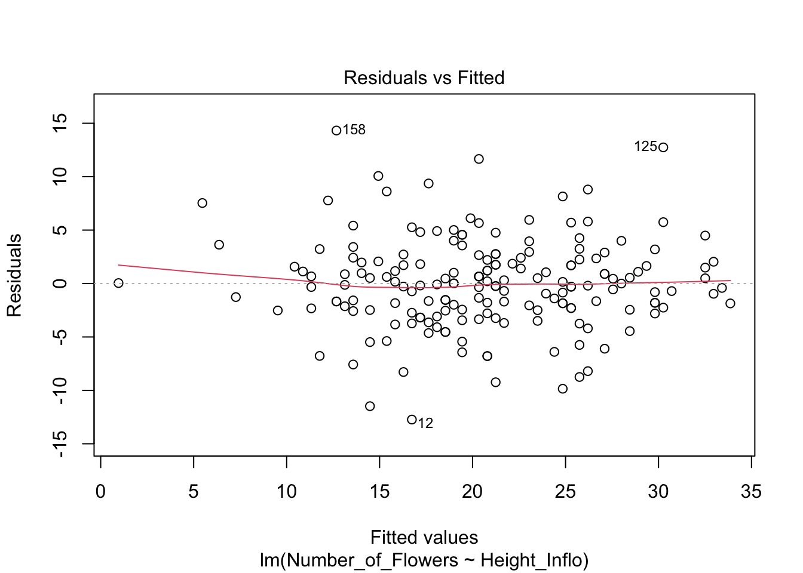
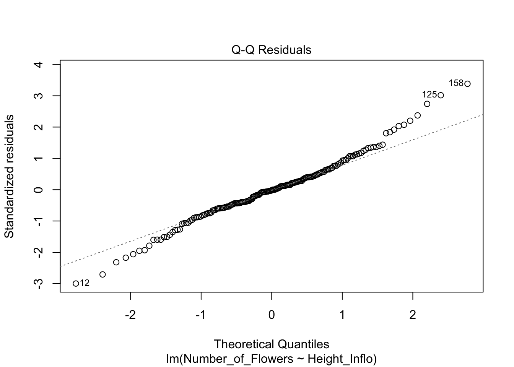
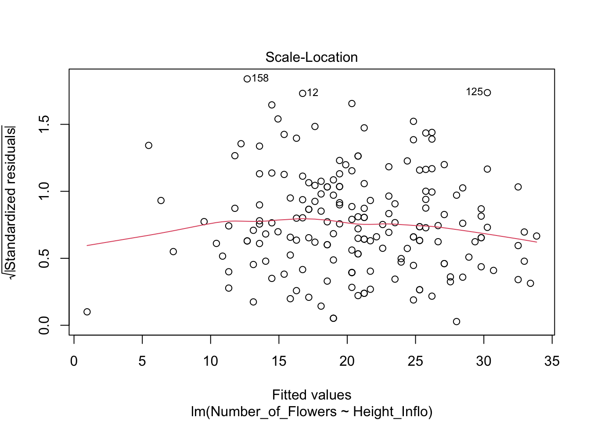
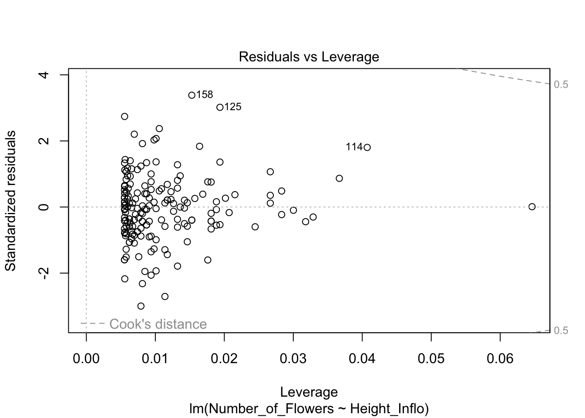
ggplot(dipodium2, aes(Height_Inflo, Number_of_Flowers))+
geom_smooth(method=lm)+
geom_point()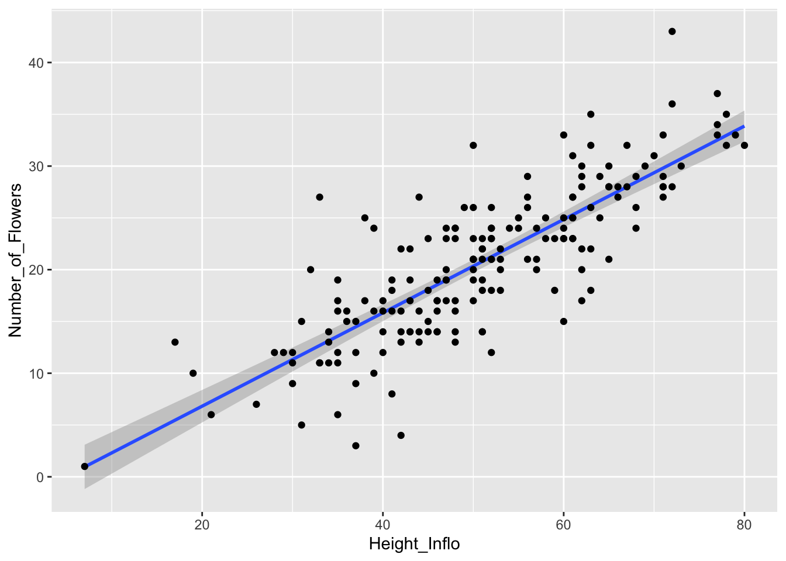
#influence(modelflower)
#rstandard(modelflower)
#influence.measures(modelflower)
#head(fortify(modelflower))La función plot() aplicada a un modelo produce cuatro gráficos de diagnóstico de forma automática. Los dos primeros son los que interesan en este capítulo: Residuals vs Fitted, que es el gráfico de homogeneidad, y Normal Q-Q, que evalúa la normalidad de los residuales. A continuación se reconstruye el primero con ggplot2 para poder controlar su apariencia.
Note que se está aplicando el modelo modelflower, y se usan los valores calculados en el modelo .fitted y .resid para producir el gráfico. Se añade una linea horizontal para identificar el modelo nulo con geom_hline.
res<-ggplot(modelflower, aes(.fitted, .resid))+
geom_point()+
geom_hline(yintercept=0,
col="red", linetype="dashed")+
theme(axis.title=element_text(size=20,face="bold"),
axis.text=element_text(size=20, face="bold"))+
xlab("Valores estimados")+
ylab("Residuales")+
ggtitle("Residuales vs. Valores Estimados")
res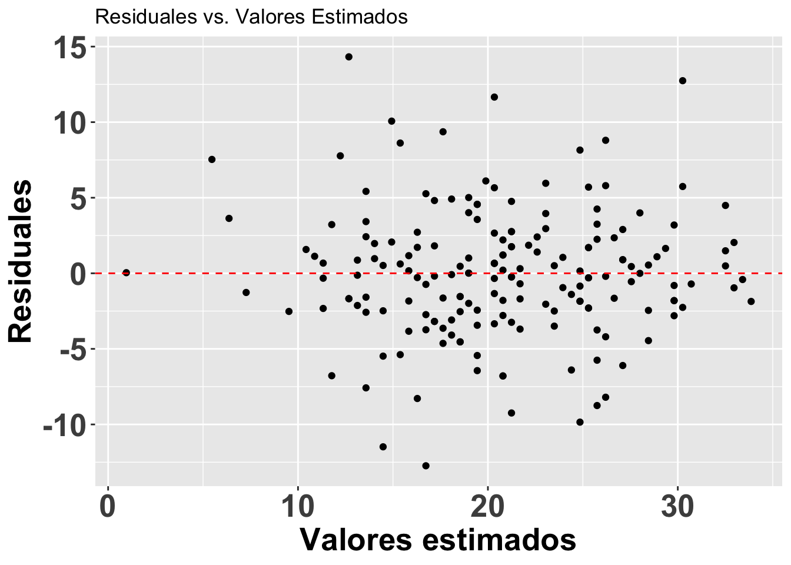
Lo que observaremos es que la distribución de los residuales luce más o menos uniforme alrededor del promedio de los residuales (el cero). Hay aproximadamente igual cantidad de valores mayor a cero (por encima de la línea roja punteada) y menor a cero (por debajo de la línea roja punteada) que están distribuidos a través de la variable en el eje de X, o valores estimados. Además, los residuales (negativos o positivos) no están limitados a subgrupos de los valores estimados (en la X).
Cómo leer el gráfico de residuales contra valores estimados:
- Una nube sin forma, de ancho constante: el supuesto se cumple. Esto es lo que uno quiere ver.
- Un embudo o cono, o sea los residuales se abren según aumentan los valores estimados: heterocedasticidad. Es el patrón más común con datos de conteo o de biomasa, y suele mejorar con una transformación logarítmica o de raíz cuadrada.
- Una curva, por ejemplo residuales negativos en los extremos y positivos en el centro: el problema no es la varianza sino la forma del modelo. La relación no es lineal y hace falta un término cuadrático o una transformación de la variable predictiva.
- Rachas de puntos por encima y luego por debajo de la línea, cuando el eje de X es el orden de recolección: falta de independencia.
10.6.1 El gráfico de residuales en orden de recolección
Retomando lo que se anticipó en la sección de independencia, el mismo objeto del modelo permite evaluar la correlación serial. Se grafica cada residual contra su posición en la hoja de datos usando seq_along. Si los puntos alternan sin patrón alrededor de cero, no hay evidencia de correlación serial.
ggplot(modelflower, aes(seq_along(.resid), .resid))+
geom_point()+
geom_line(alpha=0.3)+
geom_hline(yintercept=0, col="red", linetype="dashed")+
theme(axis.title=element_text(size=12,face="bold"),
axis.text=element_text(size=12, face="bold"))+
xlab("Orden de la observación en la hoja de datos")+
ylab("Residuales")+
ggtitle("Residuales en el orden de recolección")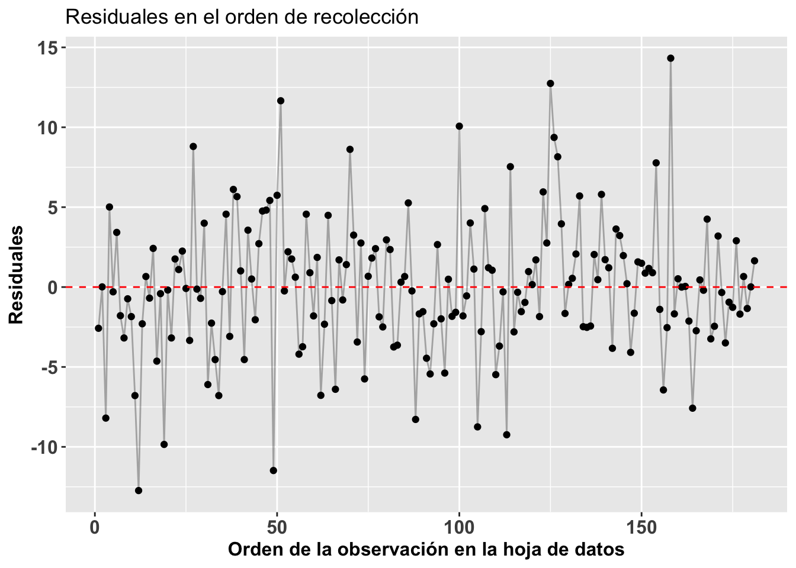
Para acompañar el gráfico con una prueba formal se puede usar la función durbinWatsonTest del paquete car. La hipótesis nula es que no hay autocorrelación entre residuales consecutivos; un valor-p grande es, otra vez, el resultado deseado. Tenga presente que esta prueba solo tiene sentido si el orden de las filas en la hoja de datos corresponde al orden real de recolección.
durbinWatsonTest(modelflower)## lag Autocorrelation D-W Statistic p-value
## 1 0.08656669 1.823994 0.26
## Alternative hypothesis: rho != 010.7 Los residuales de Student para detectar valores sesgados
A continuación se ilustra otro enfoque para evaluar los residuales. En este caso, para detectar valores sesgados (outliers). Para visualizar los residuales se usan los residuales estandarizados, o sea cada residual dividido por su desviación estándar estimada. Al estandarizarlos, todos quedan en la misma escala sin importar las unidades de la variable original, y eso permite usar un criterio común: un residual estandarizado mayor de 3 en valor absoluto se considera atípico, porque bajo una distribución normal casi ninguna observación debería llegar tan lejos.
Note en la figura que se usa otra vez el modelo modelflower y los valores calculados en el modelo .fitted y los residuales estandarizados con .stdresid.
En el eje de y no se grafica el residual estandarizado directamente, sino \(\sqrt{|\,\text{residual estandarizado}\,|}\). Por eso todos los valores en el eje de y son mayores de cero: al tomar el valor absoluto se eliminan los signos. Esta transformación se usa porque hace más fácil ver si la dispersión cambia a lo largo del eje de X, que es justamente el supuesto de homogeneidad. Tenga presente que en esta escala el criterio de 3 no aplica directamente: un residual estandarizado de 3 aparece en el gráfico a la altura de \(\sqrt{3} \approx 1.73\).
ResEst=ggplot(modelflower,
aes(.fitted, sqrt(abs(.stdresid)))) +
geom_point(na.rm=TRUE)+
theme(axis.title=element_text(size=20,face="bold"),
axis.text=element_text(size=20, face="bold"))+
xlab("Valores estimados")+
ylab("Residuales estandarizados \n de Student")+
ggtitle("Residuales vs. Valores Estimados")
ResEst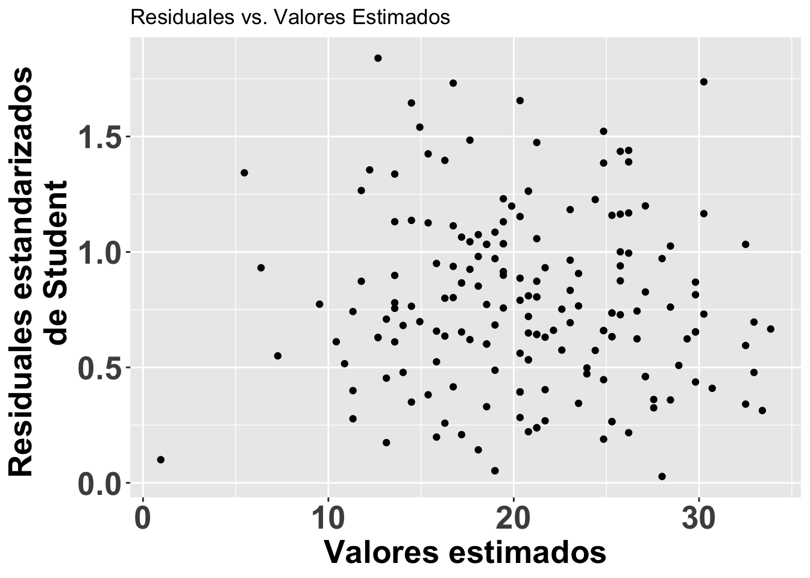
Si se prefiere trabajar con el criterio de 3 de forma directa, se puede graficar el residual estandarizado sin transformar y añadir las dos líneas de corte. Así se identifica de inmediato cuáles observaciones lo exceden.
ggplot(modelflower, aes(.fitted, .stdresid))+
geom_point()+
geom_hline(yintercept = c(-3, 0, 3),
col = c("red", "black", "red"),
linetype = c("dashed", "solid", "dashed"))+
theme(axis.title=element_text(size=12,face="bold"),
axis.text=element_text(size=12, face="bold"))+
xlab("Valores estimados")+
ylab("Residuales estandarizados")+
ggtitle("Criterio de +/- 3 para valores atípicos")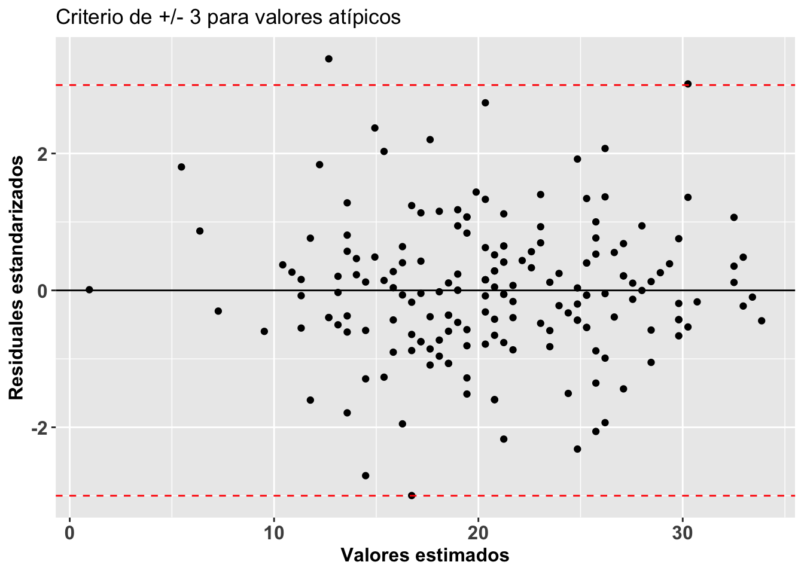
## [1] 210.8 Valores sesgados con la Distancia de Cook, Di
Hay que distinguir dos ideas que se confunden con facilidad. Un valor atípico es una observación con un residual grande: el modelo la predice mal. Un valor influyente es una observación que, si se removiera, cambiaría los coeficientes del modelo. No son lo mismo: un punto puede estar muy lejos de la línea y no mover nada (si queda en el centro del rango de X), y otro puede estar cerca de la línea y aun así dominar la pendiente (si queda en un extremo del rango de X). La sección anterior atendió los valores atípicos; esta atiende los influyentes.
cooks.distance(modelo): distancia de Cook.
- Qué hace: mide cuánto cambiaría el modelo si se eliminara cada observación; sirve para detectar puntos muy influyentes.
- Cómo leer: valores altos (\(D_i > 1\) o \(D_i > 4/n\)) señalan observaciones que conviene revisar.
La medida fue desarrollada por R. Dennis Cook en 1977, en un artículo breve que hoy es una de las referencias más citadas del análisis de regresión.
Continuando con el tema de evaluar si hay valores que podrían influenciar mucho el análisis, podemos utilizar una de las herramientas para evaluar el peso de cada valor sobre una regresión lineal basada en métodos de los mínimos cuadrados, llamada la Distancia de Cook. Este análisis fue desarrollado por R. Dennis Cook en 1977 y tiene como objetivo evaluar cada valor en la matriz de datos y el peso que tiene sobre el resultado (cuando esté este incluido o no en el análisis). Produce un índice para cada uno de los valores sobre el resultado basándose en los valores residuales que se llama la Distancia de Cook. Por lo tanto, ese análisis evalúa el impacto relativo de cada valor sobre el índice. Desafortunadamente no está claro cuál es el valor crítico; o sea, qué valor nos puede indicar que se tiene exceso de peso sobre los resultados. Las dos principales sugerencias son: Distancia de Cook, Di, es mayor a 1 (sugerido por el propio R. Dennis Cook en 1982); y que la Di > 4/n, donde n es el número de observaciones (Bollen et al. 1990).
Para hacer una ilustración, continuaremos con el modelo modelflower usando los valores calculados en el modelo anterior. El gráfico se construirá utilizando la opción seq_along, para que los valores en el eje de X se basen en la secuencia de datos en el archivo y los valores en el eje de Y se basen en los valores de la Distancia de Cook.
Note que el valor de corte que se dibuja no se escribió a mano: se calcula como 4 dividido entre el número de observaciones del modelo. Como el modelo tiene 181 observaciones, ese corte es 4/181 = 0.022.
n_obs <- nrow(dipodium2) # cantidad de observaciones en el modelo
corte <- 4/n_obs
n_obs## [1] 181
corte## [1] 0.02209945
ggplot(modelflower,
aes(seq_along(.cooksd), .cooksd))+
geom_bar(stat="identity",
position="identity", fill="steelblue")+
geom_hline(yintercept = corte, colour="red")+
theme(axis.title=element_text(size=20,face="bold"),
axis.text=element_text(size=20, face="bold"))+
xlab("La secuencia de las observaciones")+
ylab("Distancia de Cook")+
ggtitle("Distancia de Cook")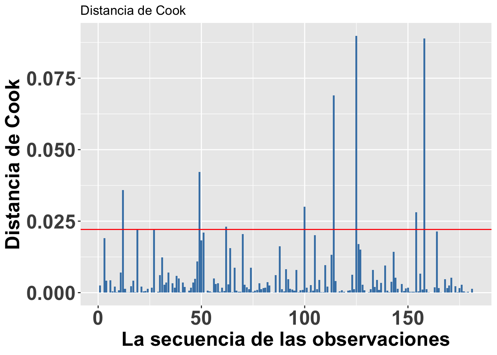
# ¿Cuántas observaciones exceden cada criterio?
sum(cooks.distance(modelflower) > 1)## [1] 0
sum(cooks.distance(modelflower) > corte)## [1] 8En este caso, vemos que todos los valores están muy por debajo de 1, lo que sugiere que ninguno de los valores individuales influenciaría mucho en los resultados aún si estos fuesen excluidos. Si utilizáramos la segunda alternativa de Di > 4/n, entonces nos deberían preocupar los valores de Di que son mayores a 4/181=0.022. Si se considera esta segunda alternativa, sería necesario evaluar esas observaciones en la tabla de datos que pudiesen ser sospechosas (los valores encima de la línea roja). Note que no es que están incorrectos; más bien, este resultado es solamente una herramienta para evaluar valores que parecen tener un impacto considerable sobre los resultados.
10.9 Causas principales de los valores sesgados
Los valores que parecen atípicos pueden ser normales de la población estudiada; en esos casos, removerlos podría llevar a describir los resultados de forma incorrecta. Primero hay que evaluar las siguientes posibles causas. Si alguna de ellas está presente, hay que corregir los valores o removerlos de la hoja de análisis.
- los valores recolectados son erróneos.
- los valores fueron introducidos incorrectamente en la hoja de datos.
- los valores recolectados tienen diferentes dimensiones; por ejemplo, algunos en cm y otros en mm para la misma variable.
No elimines valores atípicos automáticamente. Un valor extremo puede ser real y biológicamente válido; removerlo sin justificación sesga los resultados. Elimínalo solo si identificas una causa clara (error de medición o de captura).
Una práctica que resuelve casi todos estos dilemas: si hay dudas sobre un valor extremo, corra el análisis con y sin ese valor y reporte ambos resultados. Si la conclusión biológica no cambia, el punto era irrelevante y no hay nada que decidir. Si la conclusión sí cambia, entonces el lector merece saberlo, y ese hecho es en sí mismo un resultado que hay que reportar.
10.10 Supuesto de normalidad
Hay muchas pruebas estadísticas que asumen que los datos provienen de una distribución normal. Pero no todas las pruebas tienen que satisfacer ese supuesto. Por ejemplo, la prueba de t o el ANOVA asumen distribución normal. Por el contrario, las pruebas no paramétricas como Wilcoxon, Mann-Whitney, Kruskall Wallis y otras no asumen ese supuesto.
Antes de seguir, conviene repetir la distinción de la tabla del comienzo del capítulo. Cuando se comparan dos grupos con una prueba de t, el supuesto es sobre la variable medida dentro de cada grupo. Cuando se ajusta un ANOVA o una regresión, el supuesto es sobre los residuales del modelo. En las secciones que siguen se evalúa primero la variable cruda, que es el caso de la prueba de t, y al final se evalúan los residuales del modelo modelflower, que es el caso de la regresión.
Una alternativa tradicional para comprobar la normalidad de los datos es mirar el gráfico de QQ; o sea, una visualización para comparar las probabilidades de dos variables en las que se grafican los cuantiles (recordemos que Q viene de quantile, cuantil). Si las distribuciones de las dos variables son similares, los puntos aparecerán nítidamente en el gráfico de QQ sobre la línea de X-Y. Eso se demostrará a continuación.
Un tercer detalle que se suele pasar por alto: lo que las pruebas paramétricas realmente necesitan es que la distribución del promedio muestral sea normal, no que lo sean los datos individuales. Por el teorema del límite central, el promedio se acerca a una distribución normal según aumenta el tamaño de muestra, aun cuando los datos crudos estén sesgados. Por eso una desviación moderada de la normalidad con n grande preocupa poco, mientras que la misma desviación con n pequeño preocupa mucho. El teorema del límite central se desarrolla en el capítulo 12.
10.11 El gráfico Q-Q
En el gráfico se representa el consumo por la Becasa de Mar de la base de datos Godwits, el ave de las marismas de Argentina que hemos analizado anteriormente. En el gráfico se nota que los datos a los extremos no están muy cerca de la línea X-Y, lo que sugiere que el consumo por la Becasa de Mar no tiene una distribución normal. Aquí se usa el objeto BecasaDeMar, o sea los datos ya filtrados por sexo que se prepararon más arriba.
# Note que anteriormente ya habíamos depositado los datos en el data.frame BecasaDeMar
ggplot(BecasaDeMar, aes(sample=mgconsumed))+
geom_qq()+
geom_qq_line()+
theme(axis.title=element_text(size=20,face="bold"),
axis.text = element_text(size=20,face="bold"))+
xlab("Valores teóricos")+
ylab("Valores observados")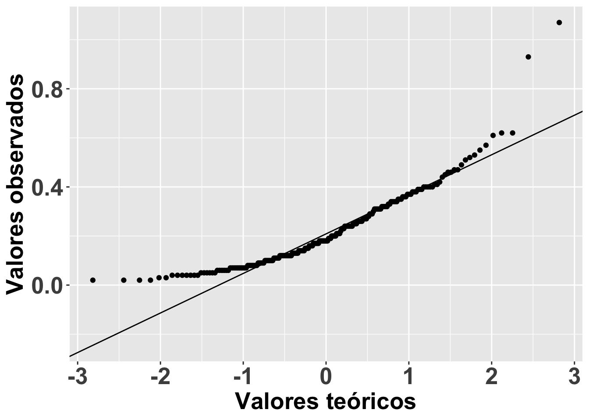
10.12 geom_qq y geom_qq_line
geom_qq() + geom_qq_line(): gráfico Q-Q en ggplot2.
-
Qué hacen: dibujan los cuantiles observados frente a los teóricos (
geom_qq) y la línea de referencia (geom_qq_line). - Cómo leer: si los puntos siguen la línea, los datos son compatibles con la distribución normal.
A pesar de lo fácil de este enfoque, apreciar si los datos quedan nítidamente alineados sobre una línea no es tan evidente en algunos casos. Por lo tanto, en la siguiente versión del gráfico de QQ se le añade una línea para mostrar dónde debería estar localizada la gran mayoría de los datos si estos tuvieran una distribución normal. Ahora vemos que claramente muchos de los datos no yacen en la línea. Evidentemente, el trazar la línea teórica ayuda a visualizar la conclusión; en este caso, se podría concluir que el consumo de comida por este pájaro no sigue una distribución normal la linea azul. En el segundo ejemplo se crea un conjunto de datos con distribución normal y, en ese caso, la gran mayoría de los datos se solapan con la línea, la línea roja
Note que en el primer panel se usa el objeto Godwits completo, o sea sin filtrar por sexo, mientras que la figura anterior usó BecasaDeMar, que sí está filtrado. La conclusión sobre la normalidad es la misma en ambos casos, pero es importante saber siempre cuál conjunto de datos se está graficando.
En un gráfico Q-Q, si los datos siguen una distribución normal los puntos caen sobre la línea diagonal. Desviaciones sistemáticas en los extremos (colas) indican que los datos no son normales. Además, la dirección de la desviación informa sobre el tipo de problema: si los puntos se curvan hacia arriba en el extremo derecho, hay una cola larga hacia los valores grandes (sesgo positivo); si se curvan hacia abajo en el extremo izquierdo, la cola larga está hacia los valores pequeños (sesgo negativo); y una curva en forma de “S” indica colas más pesadas o más ligeras que las de una normal.
a= ggplot(Godwits, aes(sample = mgconsumed)) +
stat_qq() +
stat_qq_line(colour="blue")+
xlab("Valores teóricos")+
ylab("Valores observados")+
ggtitle("(a) Consumo, Becasa de Mar")
df <- data.frame(y = rnorm(2000))
b <- ggplot(df, aes(sample = y))+
stat_qq() +
stat_qq_line(colour="red")+
xlab("Valores teóricos")+
ylab("Valores observados")+
ggtitle("(b) Datos simulados normales")
grid.arrange(a,b,ncol=2)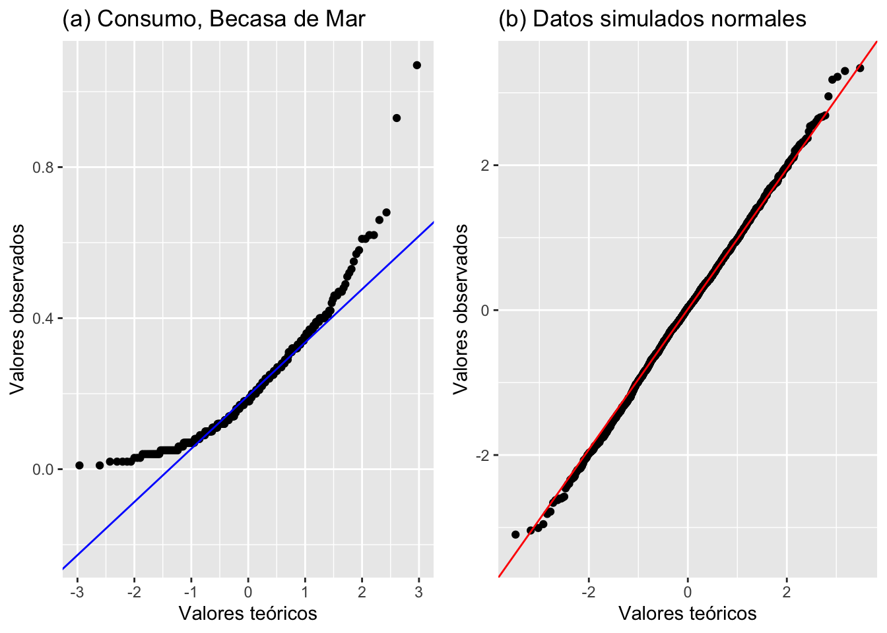
10.13 La distribución normal
Una segunda alternativa para visualizar si los datos siguen una distribución normal es construir un histograma de los datos y gráficar sobre este la curva normal basándonos en el promedio y la desviación estándar de los mismos datos. Para construir el histograma se usa la función geom_histogram y para la distribución teórica normal de estos datos se usa la función stat_function. Esto lo demostramos con gráficos adicionales de la Becasa del Mar, donde se representa la razón de consumo y el período en que esto ocurrió. En la Figura (a) vemos la distribución para todos los períodos, y los otros tres en la Figura (b) muestran una distribución para cada uno de los períodos. Se observa en todos los casos que las distribuciones están sesgadas hacia la derecha (la mayoría de los valores son pequeños y hay una cola larga hacia los valores grandes). Esta visualización nos ayuda a evaluar la normalidad de esos datos. Nota que no es una prueba estadística igual como el gráfico de qqplot.
La lógica de esta figura es la siguiente: la curva roja es la distribución normal que tendrían los datos si fueran normales, construida con el promedio y la desviación estándar observados. Si el histograma se aparta de esa curva, la diferencia entre las barras y la curva es exactamente la falta de normalidad.
Nota la formula para calcular la distribución normal (la densidad). Hay solamente dos parámetros que necesitamos, el promedio \(\mu\) y la desviación estándar \(\sigma\). Todos los demás son constantes: \(\pi\) y \(e\) (la base de los logaritmos naturales).
\[P(x)=\frac{1}{\sigma\sqrt{2\pi}}\,e^{-\frac{(x-\mu)^{2}}{2\sigma^{2}}}\]
Note que en geom_histogram se tiene que incluir
aes(y=after_stat(density))
Esto es necesario porque la curva normal se dibuja en unidades de densidad y no de frecuencia. Si el histograma quedara en frecuencia (el conteo de observaciones por barra) y la curva en densidad, las dos quedarían en escalas distintas y la curva se vería aplastada contra el eje.
Después hay que añadir dentro de la función stat_function todo lo siguiente:
stat_function(fun = dnorm, args = list(mean = mean(Godwits\(mgconsumed, na.rm = TRUE), sd = sd(Godwits\)mgconsumed, na.rm = TRUE)), colour = “red”, linewidth = 1)
El parámetro dnorm quiere decir densidad de la distribución normal. También se necesitan dos parámetros para calcular el promedio (mean) y la desviación estándar (sd). Con ambos hay que especificar de dónde provienen los datos; en este caso,
Godwits$mgconsumed
Además, si hay NA en los datos, hay que añadir na.rm = TRUE para excluir los NA. Veamos.
a=ggplot(Godwits, aes(mgconsumed)) +
theme(legend.position = "none") +
geom_histogram(aes(y=after_stat(density)),
colour="black", fill="white")+
theme(axis.title=element_text(size=12,face="bold"),
axis.text = element_text(size=12,face="bold"))+
labs(x = "Razón de Consumo", y = "Densidad") +
stat_function(fun = dnorm,
args = list(mean = mean(Godwits$mgconsumed,
na.rm = TRUE),
sd = sd(Godwits$mgconsumed,na.rm = TRUE)),
colour = "red", linewidth = 1)+
ggtitle("Todos los datos")
b= ggplot(Godwits, aes(mgconsumed)) +
theme(legend.position = "none") +
geom_histogram(aes(y=after_stat(density)),
colour="black", fill="white")+
theme(axis.title=element_text(size=12,face="bold"),
axis.text = element_text(size=12,face="bold"))+
labs(x = "Razón de Consumo", y = "Densidad") +
stat_function(fun = dnorm, args = list(mean =
mean(Godwits$mgconsumed, na.rm = TRUE),
sd = sd(Godwits$mgconsumed, na.rm = TRUE)),
colour = "red", linewidth = 1)+
facet_wrap(~PERIOD)+
ggtitle("Por estación anual")
grid.arrange(a,b,ncol=1)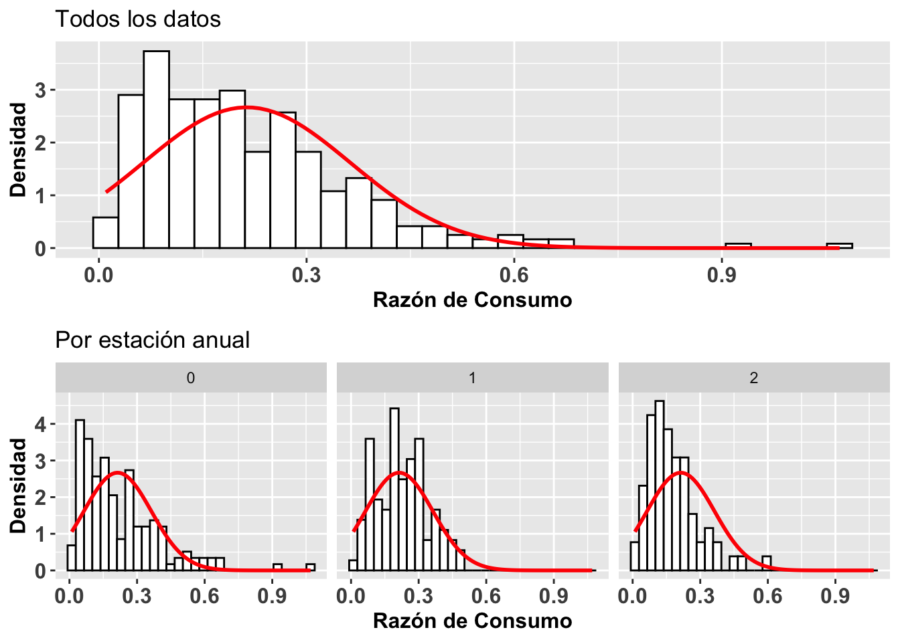
10.14 stat_function
Continuaremos con este mismo análisis pero esta vez evaluaremos la distribución del peso de gorriones en un trabajo de captura y recaptura en 6 meses diferentes. Utilizaremos la base de datos SparrowsElphick. En la figura (a) observamos un histograma de la distribución de los pesos de estas aves por cada mes. Vemos claramente que hay meses (mayo, septiembre y octubre) en los que se tuvieron muchas menos observaciones. En el segundo gráfico, Figura (b), observamos el histograma y la curva normal para todos los datos sin importar el mes. Igualmente, esta visualización nos ayuda a evaluar la normalidad de los datos.
El hecho de que unos meses tengan muchas menos observaciones que otros no es un detalle menor. Un histograma construido con 8 observaciones se ve irregular aunque los datos provengan de una población perfectamente normal, simplemente porque hay pocas barras y cada una depende de muy pocos individuos. Por eso, al evaluar normalidad por grupos, siempre hay que mirar el tamaño de muestra de cada grupo antes de concluir.
Sparrows=SparrowsElphick
Sparrows$fMonth<-factor(Sparrows$Month,
levels = c(5, 6, 7, 8, 9, 10),
labels = c("Mayo", "Junio", "Julio", "Agosto",
"Sept.", "Oct."))
# El tamaño de muestra por mes
table(Sparrows$fMonth)##
## Mayo Junio Julio Agosto Sept. Oct.
## 17 590 409 194 49 36
a=ggplot(Sparrows, aes(wt))+
geom_histogram(binwidth=1, colour="white")+
facet_wrap(~fMonth)+
theme(axis.title=element_text(size=12,face="bold"),
axis.text = element_text(size=12,face="bold"))+
xlab("Peso")+
ylab("Frecuencia")
b=ggplot(Sparrows, aes(wt)) +
theme(legend.position = "none")+
theme(axis.title=element_text(size=12,face="bold"),
axis.text = element_text(size=12,face="bold"))+
geom_histogram(aes(y=after_stat(density)), colour="black",
fill="white") +
labs(x = "Peso", y = "Densidad") +
stat_function(fun = dnorm,
args = list(mean = mean(Sparrows$wt, na.rm = TRUE),
sd = sd(Sparrows$wt, na.rm = TRUE)),
colour = "red", linewidth = 1)
grid.arrange(a,b,ncol=2)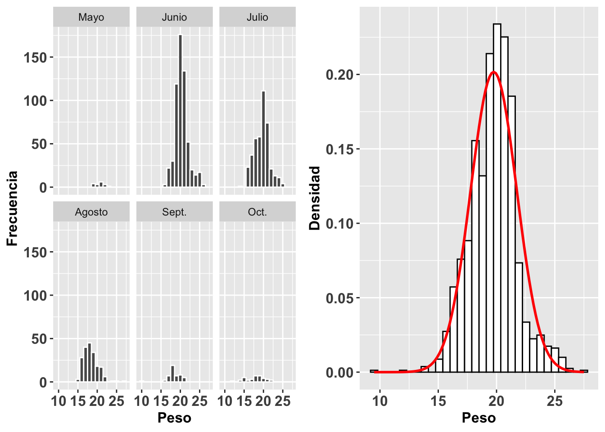
10.15 Visualizando la distribuciones con geom_density
geom_density(): curva de densidad suavizada.
- Qué hace: en lugar de barras (histograma), dibuja una curva continua que estima la forma de la distribución de una variable.
- Útil: para ver de un vistazo si la distribución es simétrica, sesgada o tiene varias modas.
A continuación se muestra otra alternativa para observar los datos anteriores. Nada más que estos ahora se representan sustituyendo las funciones geom_histogram y stat_function por geom_density para la construcción de curvas de densidad. Otra vez utilizaremos la base de datos SparrowsElphick. La curva normal que se genera es tipo gausiana (gaussian en inglés). Note que para el segundo conjunto de gráficos, (b), no se le especificó la opción en kernel igual a gaussian ya que de forma predeterminada la función geom_density usa el parámetro gaussian; o sea, no es necesario especificarla si eso es lo que se quiere. Una distribución en donde el pico es más alto significa que hay mayor densidad de datos en esa región de la variable en el eje de X. Podemos apreciar que la curva de densidad no sigue claramente una distribución normal con respecto a los valores en X.
La ventaja del gráfico de densidad sobre el histograma es que no depende del ancho de las barras, que es una decisión arbitraria que puede cambiar por completo la apariencia de un histograma. La desventaja es que la curva suaviza los datos y puede sugerir una forma continua donde solo hay unos pocos puntos; de ahí la importancia, otra vez, de conocer el tamaño de muestra de cada grupo.
# Note que anteriormente ya habíamos depositado los datos en el data.frame Sparrows:
a= ggplot(Sparrows, aes(wt))+
geom_density(aes(group=fMonth, fill=fMonth),
kernel="gaussian")+
facet_wrap(~fMonth)+
guides(fill="none")+
theme(axis.title=element_text(size=12,face="bold"),
axis.text=element_text(size=12, face="bold"))+
ylab("Densidad")+
xlab("Peso")
b= ggplot(Sparrows, aes(wt))+
geom_density(aes(group=fMonth,
fill=fMonth),
alpha=.4)+
scale_color_discrete()+
theme(axis.title=element_text(size=12,face="bold"),
axis.text=element_text(size=12, face="bold"))+
ylab("Densidad")+
xlab("Peso")+
labs(fill="Mes")
grid.arrange(a,b,ncol=1)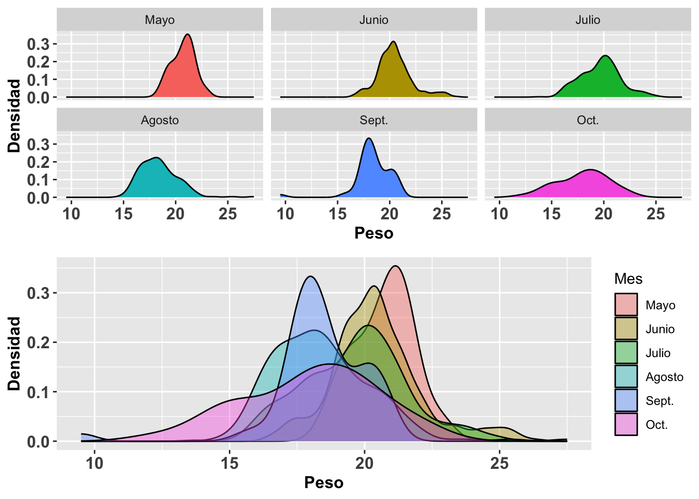
10.16 Pruebas formales de normalidad
Las herramientas visuales anteriores son el punto de partida, pero a veces se necesita un criterio numérico. Las pruebas de normalidad se desarrollan con detalle en el capítulo 12; aquí se aplican brevemente a los datos de este capítulo para cerrar el ciclo.
La hipótesis nula de todas ellas es la misma:
Ho: los datos provienen de una distribución normal.
Ha: los datos NO provienen de una distribución normal.
Igual que con las pruebas de homogeneidad, un valor-p grande es el resultado deseado.
# Normalidad de la variable cruda: el consumo de la Becasa de Mar
shapiro.test(BecasaDeMar$mgconsumed)##
## Shapiro-Wilk normality test
##
## data: BecasaDeMar$mgconsumed
## W = 0.88433, p-value = 1.767e-11
# Normalidad de los RESIDUALES del modelo de regresión
shapiro.test(residuals(modelflower))##
## Shapiro-Wilk normality test
##
## data: residuals(modelflower)
## W = 0.98287, p-value = 0.02559##
## Anderson-Darling normality test
##
## data: residuals(modelflower)
## A = 0.99561, p-value = 0.01233Note la diferencia de propósito entre las dos primeras líneas. La primera evalúa la variable tal como se midió, que es lo que corresponde si el plan es hacer una prueba de t. La segunda evalúa los residuales de modelflower, que es lo que corresponde para la regresión del capítulo 18.
Las pruebas de normalidad son muy sensibles al tamaño de muestra. Con muestras grandes rechazan la hipótesis nula ante desviaciones triviales que no afectan a las pruebas paramétricas; con muestras muy pequeñas casi nunca la rechazan por falta de poder. Por eso no conviene depender solo del valor-p: combínelo siempre con el histograma y el gráfico Q-Q. Vea el capítulo 12 para las reglas prácticas sobre los tamaños de muestra en que cada prueba es confiable.
10.17 Simetría de las distribuciones
El cuarto supuesto de la lista inicial es la simetría. Una distribución es simétrica si la mitad izquierda es una imagen de espejo de la mitad derecha. La normalidad implica simetría, pero la simetría no implica normalidad: hay distribuciones perfectamente simétricas que no son normales, como la uniforme.
La simetría importa por sí sola porque varias pruebas no paramétricas, que se estudian en el capítulo 21, no asumen normalidad pero sí asumen simetría. La prueba de rangos con signo de Wilcoxon es el ejemplo típico. O sea que, al abandonar la normalidad, uno no queda libre de todos los supuestos.
La forma de cuantificar la simetría es el índice de oblicuidad (skewness), que se introdujo en el capítulo 8. Recordemos su interpretación: es positiva cuando la cola larga está a la derecha, negativa cuando está a la izquierda, y cercana a cero cuando la distribución es simétrica.
skewness(x) (paquete e1071): índice de oblicuidad.
-
Qué hace: cuantifica la asimetría de la variable
xcon un solo número. - Cómo leer: el signo indica hacia qué lado está la cola larga; la magnitud, cuán pronunciada es. Valores cercanos a cero indican simetría.
# Oblicuidad del consumo de la Becasa de Mar
e1071::skewness(BecasaDeMar$mgconsumed, na.rm = TRUE)## [1] 1.568521
# Oblicuidad del peso de los gorriones
e1071::skewness(Sparrows$wt, na.rm = TRUE)## [1] 0.1068934## [1] 0.2113748Compare estos números con los histogramas que se construyeron más arriba. El valor del índice debe concordar con lo que se ve en la figura: si el histograma tiene una cola larga hacia la derecha, la oblicuidad tiene que ser positiva. Cuando el número y la figura no concuerdan, casi siempre es señal de que se calculó el índice sobre una variable distinta a la que se graficó.
No existe un valor de corte universalmente aceptado para decidir cuándo la oblicuidad es “demasiada”. Los criterios que circulan en la literatura varían según el autor y según el tamaño de muestra. Por eso, en este curso el índice se usa de forma descriptiva y comparativa (por ejemplo, para comparar la asimetría antes y después de una transformación) y no como una prueba con un umbral fijo.
10.18 ¿Qué hacer cuando no se cumple un supuesto?
Hasta aquí el capítulo ha tratado de detectar los problemas. Esta sección resume qué hacer con ellos. Hay cuatro caminos, y conviene considerarlos en este orden.
1. Revisar los datos. Antes de transformar nada, verifique si el problema se debe a unos pocos valores erróneos, a unidades mezcladas o a filas duplicadas. Es sorprendente cuán a menudo un histograma con una cola imposible se debe a un error de entrada de datos.
2. Transformar la variable. Una transformación cambia la escala de la variable sin cambiar el orden de las observaciones. Sirve para corregir sesgo y heterocedasticidad a la vez, porque ambos problemas suelen tener la misma causa.
| Transformación | Cuándo se usa | En R |
|---|---|---|
| Logaritmo | sesgo positivo fuerte; la varianza crece con el promedio | log(x) |
| Logaritmo con ajuste | igual que el anterior, pero hay ceros en los datos | log(x + 1) |
| Raíz cuadrada | datos de conteo con sesgo moderado | sqrt(x) |
| Recíproco | sesgo positivo muy extremo | 1/x |
Después de transformar, todo se interpreta en la escala transformada. Si se analiza log(peso), la diferencia entre dos grupos ya no se expresa en gramos sino en unidades logarítmicas, y el promedio que se estima es la media geométrica y no la aritmética. Transformar no es gratis: se paga con interpretabilidad. Por eso siempre hay que reportar cuál transformación se usó, y verificar los supuestos otra vez sobre los datos transformados.
3. Cambiar de prueba. Si la transformación no resuelve el problema, o si la variable transformada no se puede interpretar biológicamente, se cambia a un método que no exija el supuesto que falla:
- Para falta de normalidad: las pruebas no paramétricas del capítulo 21 (Wilcoxon, Mann-Whitney, Kruskal-Wallis), que trabajan con rangos en vez de valores.
- Para falta de homogeneidad de varianza: la prueba de t de Welch, que es de hecho la opción predeterminada de la función
t.test()en R y no asume varianzas iguales. - Para datos de conteo o de proporciones: los modelos lineales generalizados, de los cuales la regresión logística del capítulo 19 es un caso. Para conteos suele ser preferible un modelo de este tipo antes que transformar con raíz cuadrada.
- Para falta de independencia: un modelo que incluya la estructura de los datos, por ejemplo un modelo mixto.
4. Métodos robustos o bayesianos. El bootstrap y la estadística bayesiana permiten estimar intervalos de confianza sin depender del supuesto de normalidad. Son las alternativas que se mencionaron al principio del capítulo.
La decisión sobre cuál camino tomar se documenta en el manuscrito. Una frase como “los datos se transformaron con logaritmo natural porque el gráfico de residuales mostró heterocedasticidad” es información que el lector necesita para evaluar el trabajo. Decidir en silencio, y reportar solo el análisis final, es precisamente la práctica que la sección de ética del comienzo del capítulo advierte que hay que evitar.
10.19 Colinealidad entre covariables con ggpairs
Este último supuesto es de naturaleza distinta a los anteriores. No se trata de la forma de la distribución ni de la dispersión de los residuales, sino de la relación entre las variables predictivas de un modelo. Por eso solo aplica cuando hay más de una variable predictiva, o sea en la regresión múltiple.
La colinealidad es la correlación alta entre dos o más variables predictivas dentro de un mismo modelo. Cuando existe, el modelo no puede separar el efecto de una variable del de la otra, porque ambas llevan la misma información.
ggpairs(datos) (paquete GGally): matriz de correlaciones.
- Qué hace: muestra en una sola figura los diagramas de dispersión, las distribuciones y los coeficientes de correlación de todos los pares de variables.
- Uso aquí: detectar colinealidad (predictoras muy correlacionadas entre sí) antes de ajustar un modelo.
Hoy en día la cantidad de datos que se obtienen en diferentes estudios puede ser muy impresionante. Muchas veces el objetivo es detectar si unas variables, entre muchas otras, podrían predecir la variable de respuesta. A consecuencia de eso, el problema mayor es tomar en cuenta la colinealidad entre variables explicativas. La colinealidad es simplemente la correlación entre variables en un modelo de análisis de regresión múltiple, en donde las variables predictivas están altamente correlacionadas.
Un ejemplo sencillo de variables con colinealidad podría incluir la relación entre el largo y ancho de las hojas de una herbácea y cómo estas están correlacionadas con la producción de flores. Es probable que la correlación entre el largo y el ancho de la hoja estén correlacionadas con la producción de las flores de formas muy similares; o sea, con una pendiente que explicaría ambas relaciones de formas similares. Entonces, al añadir ambas variables al modelo de regresión múltiple, no estaríamos explicando variaciones distintas, si no más bien la misma variación. Cuando hay mucha colinealidad entre variables explicativas, se debería seleccionar un subgrupo de estas variables que expliquen variaciones distintas para el modelo y no incluir todas las variables.
¿Cómo se manifiesta la colinealidad en los resultados? De una forma muy característica: el modelo completo es claramente significativo y el \(R^2\) es alto, pero ninguno de los coeficientes individuales lo es. Además, los errores estándar de los coeficientes son enormes y los estimados cambian de magnitud, o incluso de signo, al añadir o remover una variable. Si ve ese patrón, sospeche de colinealidad antes que de cualquier otra cosa.
A continuación exploraremos diferentes alternativas para llevar a cabo este tipo de análisis utilizando otra vez los datos de la orquídea Dipodium. En el primer ejemplo, se utiliza la función cor para evaluar solo una relación: la correlación entre la distancia de la planta a un árbol y la altura de la planta, dejando otras variables a un lado. Como deseamos el estimado de la correlación solamente, utilizamos un par de variables a la vez para evaluar la correlación entre la distancia de la orquídea al árbol y la altura de la inflorescencia (mostrado más adelante).
cor(dipodium$Distance,
dipodium$Height_Inflo,
use="pairwise.complete.obs")## [1] -0.09541256El valor obtenido es de -0.095. El signo negativo indica que a mayor distancia del árbol, menor es la altura de la inflorescencia. Ahora bien, la magnitud es muy pequeña: un coeficiente de -0.095 quiere decir que la distancia al árbol explica menos del 1% de la variación en la altura de la inflorescencia. Este es un buen momento para recordar que el signo de una correlación describe la dirección, pero es la magnitud la que dice si la relación tiene alguna importancia biológica. Para efectos de colinealidad, un valor tan bajo indica que estas dos variables pueden incluirse juntas en un modelo sin problema.
Otra alternativa es hacer el análisis de correlación de muchas variables en conjunto. En la tabla, Correlaciones de Pearson, se muestra la correlación entre las tres variables siguientes: DBH, cantidad de flores y altura de la inflorescencia. En esa tabla se observa la correlación de Pearson para estos datos. Recordemos que esta correlación asume distribución normal.
| DBH | Number_of_Flowers | Height_Inflo | |
|---|---|---|---|
| DBH | 1.000 | -0.035 | -0.10 |
| Number_of_Flowers | -0.035 | 1.000 | 0.82 |
| Height_Inflo | -0.100 | 0.820 | 1.00 |
10.19.1 Tabla de correlación de Kendall
Usando la función cor se puede también calcular estimados de correlación sin asumir distribución normal usando los métodos Kendall o Spearman mostrados en la Tabla siguiente.
kable(signif(cor(dipodium[,c(3, 8, 9)],
method="kendall",
use="pairwise.complete.obs"),2),
caption =
"\\label{fig:CK}Correlaciones de Kendall")| DBH | Number_of_Flowers | Height_Inflo | |
|---|---|---|---|
| DBH | 1.00000 | 0.00085 | -0.059 |
| Number_of_Flowers | 0.00085 | 1.00000 | 0.650 |
| Height_Inflo | -0.05900 | 0.65000 | 1.000 |
10.19.2 Tabla de correlación de Spearman
| DBH | Number_of_Flowers | Height_Inflo | |
|---|---|---|---|
| DBH | 1.000 | -0.002 | -0.08 |
| Number_of_Flowers | -0.002 | 1.000 | 0.80 |
| Height_Inflo | -0.080 | 0.800 | 1.00 |
En esas tres tablas podemos apreciar un patrón consistente entre todos los métodos; o sea, la altura de la inflorescencia está altamente correlacionada con la cantidad de flores (con coeficientes de correlación de 0.82, 0.65, y 0.81 respectivamente). Como estas dos variables comparten tanta información, incluirlas a las dos como predictoras en un mismo modelo de regresión múltiple sería un caso claro de colinealidad.
La función signif no tiene nada que ver con la significancia estadística, a pesar de lo que sugiere su nombre. Lo que hace es redondear un número a la cantidad de cifras significativas que se le indique: signif(0.8237, 2) produce 0.82. Se usa aquí únicamente para que las tablas se lean con comodidad.
Brevemente recapitulamos, si los datos no siguen una distribución normal, se deberían utilizar los métodos Kendall o Spearman. Si se tienen pocos datos, Kendall tiende a ser una mejor alternativa para determinar el indice de correlación. Se le advierte, sin embargo, que consulte libros de estadística sobre este tema antes que realice un análisis de este tipo ya que la decisión de seleccionar una alternativa sobre otra no es tan sencilla.
10.20 Seleción de parámetros para correlaciones cuando hay NA
Además, los análisis anteriores utilizados emplearon el parámetro pairwise.complete.obs, ya que obviaría los NA en las columnas que se utilizan para calcular la correlación. Por lo tanto, la cantidad de pares de datos utilizados para calcular las diferentes correlaciones entre variables puede variar si hay NA en el archivo. Tome en consideración que hay otras cuatro alternativas para analizar los datos cuando tenemos NA presentes: everything, all.obs, complete.obs y na.or.complete. No vamos a discutir esas alternativas en el presente libro. Sería bueno que busque información en R para sus usos. Estas alternativas se discutirán en otros módulos.
La consecuencia práctica de pairwise.complete.obs es que cada celda de la tabla de correlaciones puede estar calculada con un número distinto de observaciones. Esto conviene tenerlo presente al comparar los valores de la tabla entre sí, porque una correlación basada en 40 pares y otra basada en 180 pares no tienen la misma confiabilidad, aunque aparezcan una al lado de la otra.
Finalmente, también se utilizó el comando kable ya que es una manera efectiva de organizar los resultados en una tabla.
10.21 Uso de GGally para ver correlaciones
Continuando con el mismo tema, una tercera opción para descubrir la colinealidad entre covariables es utilizar el paquete GGally, ya que no solamente nos calcula las correlaciones, si no que también nos permite hacer los gráficos de densidad de la distribución de las variables y un gráfico de dispersión por pares de variables evaluadas.
La ventaja de esta función para el tema de este capítulo es que resuelve dos cosas a la vez: en la diagonal se evalúa la normalidad de cada variable por separado, y fuera de la diagonal se evalúa la colinealidad entre pares. O sea, es una sola figura que atiende dos supuestos.
En los gráficos de la siguiente Figura observamos los coeficientes de correlación, la distribución de los datos y la visualización de correlación por cada par. Además, vemos el diagrama de caja de los datos cuando hay variables discretas. Note al extremo derecho que la variable Herbivory tiene una categoría no identificada, que incluye los NA.
Con la función de ggpairs podemos calcular las correlaciones entre las variables y a la misma vez producir todos los gráficos entre las variables y gráficos de distribución de densidad de cada variable. En el gráfico podemos observar en la parte izquierda la distribución de los datos en pares. En la diagonal se observa la densidad de cada una de las variables. En la parte superior derecha se observa el valor de correlación y en el extremo derecho se observan los diagramas de caja de las variables discretas con relación a la variable de la izquierda. Este gráfico es sumamente práctico, ya que produce mucha información con pocos pasos. Desafortunadamente, no hay manera de remover los NA al presente. A consecuencia de esto, al extremo derecho uno observa en las cajas abajo una barra con muchos valores (la de la derecha), pero esta representa todos los valores NA en la tabla de datos. En este caso, la presencia de herbivoría en las plantas no fue recolectada y en cambio se dejó con un NA. Note que aquí no se pueden poner ceros u otros valores. Las alternativas podrían ser H para la presencia de herbivoría y n para las plantas donde no hay evidencia de ella.
names(dipodium) # para ver los nombres de las variables/columnas## [1] "Tree Number" "Tree species"
## [3] "DBH" "Plant number"
## [5] "Ramet number" "Distance"
## [7] "Orientation" "Number_of_Flowers"
## [9] "Height_Inflo" "Herbivory"
## [11] "RowPosition_NF" "Number_Flowers_position"
## [13] "Number_of_fruits" "Perc_FR_set"
## [15] "pardalinum_or_roseum" "Fruit_position_effect"
## [17] "Frutos_si_o_no" "P_or_R_Infl_Lenght"
## [19] "Num of fruits" "Species_Name"
## [21] "Cardinal orientation"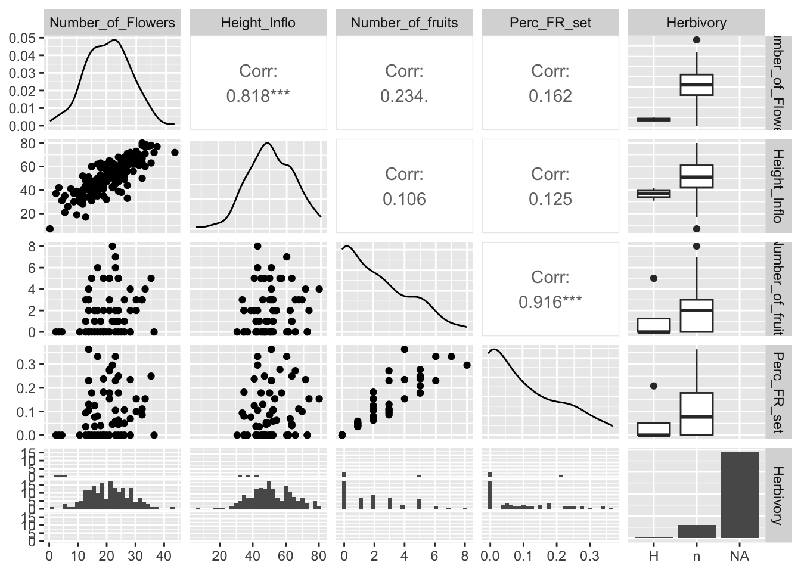
10.22 Resumen del capítulo
La tabla siguiente reúne en un solo lugar lo que se cubrió: qué supuesto, con qué herramienta se evalúa, y qué hacer si no se cumple.
| Supuesto | Herramienta visual | Prueba formal | Si no se cumple |
|---|---|---|---|
| Independencia | residuales en orden de recolección | durbinWatsonTest() |
modelo mixto; promediar por unidad experimental |
| Homogeneidad entre grupos | gráfico de cajas condicional |
leveneTest(), bartlett.test(), fligner.test()
|
transformar; prueba de t de Welch |
| Homogeneidad en regresión | residuales vs. valores estimados | ninguna en este capítulo | transformar; mínimos cuadrados generalizados |
| Normalidad | Q-Q, histograma con curva, densidad |
shapiro.test(), ad.test()
|
transformar; pruebas no paramétricas |
| Simetría | histograma, densidad | índice de oblicuidad, skewness()
|
transformar |
| Ausencia de valores influyentes | distancia de Cook, residuales estandarizados | criterios \(D_i>1\) y \(D_i>4/n\) | verificar el dato; reportar con y sin él |
| Ausencia de colinealidad |
ggpairs(), tablas de correlación |
coeficientes de correlación | remover una de las variables correlacionadas |
Tres ideas para retener del capítulo:
- Los gráficos mandan; las pruebas formales acompañan. Todas las pruebas de esta tabla dependen del tamaño de muestra y ninguna sustituye mirar los datos.
- En un modelo, el supuesto es sobre los residuales, no sobre la variable cruda.
- Evaluar supuestos no es un trámite previo al análisis: es parte del análisis, y las decisiones que se tomen aquí se reportan en el manuscrito.
10.23 Actividades de práctica
Actividad 1: Normalidad, simetría y valores atípicos.
En esta actividad se evalúa el supuesto de normalidad de variables de la orquídea Dipodium usando las cuatro herramientas del capítulo (histograma con curva teórica, gráfico Q-Q, curva de densidad y el índice de oblicuidad), y se comparan esos resultados con los de la prueba de Shapiro-Wilk. La segunda parte trata la identificación de valores atípicos y la decisión, justificada, de qué hacer con ellos.
Archivo: Exam/Actividades_Supuestos/Actividad_1_Normalidad.Rmd
Duración estimada: 1 hora y 30 minutos.
Entrega: el archivo .Rmd completado más el HTML compilado.
Actividad 2: Homogeneidad de varianza, residuales y colinealidad.
En esta actividad se evalúa la homogeneidad de varianza del peso de gorriones entre meses, primero con gráficos de cajas condicionales y después con las pruebas de Levene, Bartlett y Fligner-Killeen. La segunda parte ajusta un modelo de regresión con la orquídea Dipodium, evalúa sus residuales, identifica observaciones influyentes con la distancia de Cook y examina la colinealidad entre las covariables.
Archivo: Exam/Actividades_Supuestos/Actividad_2_Homogeneidad.Rmd
Duración estimada: 1 hora y 30 minutos.
Entrega: el archivo .Rmd completado más el HTML compilado.